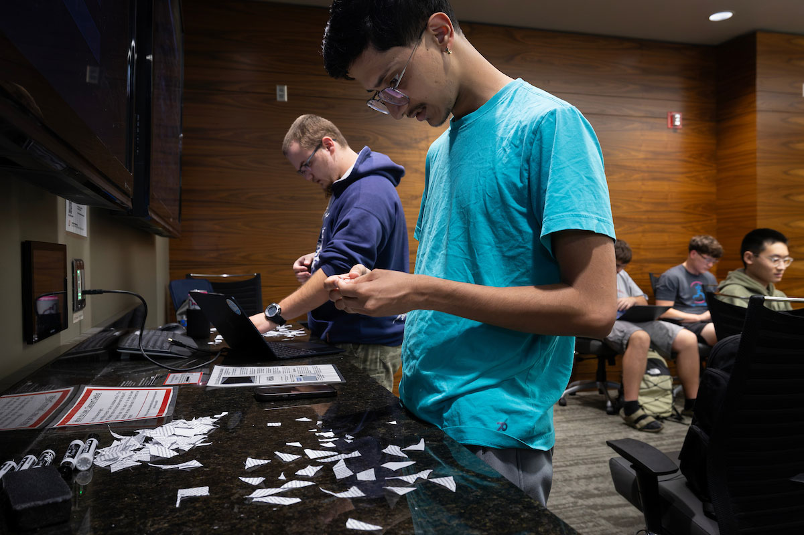

1. Balancing Old Friendships & New Faces
One of the first realities you face as a college freshman is the shifting dynamic of your friendships. I am fortunate to still stay close with my friends from high school; we support each other and keep each other grounded. But relying only on your high school circle limits your growth.
Let's be completely honest: talking to new people is intimidating. Sitting in a 50-person lecture where you don't recognize a single soul can make you want to stare at your phone until the professor starts speaking.
However, making the conscious effort to turn to the person next to you and introduce yourself is one of the best decisions you will ever make. You never know who could become:
- A lifelong friend who shares your passions,
- A dedicated study partner to compare code solutions and prepare for exams with, or
- A future colleague or career connection who refers you to an exciting job opportunity.
2. Joining NULLify & Finding Campus Organizations
During Week Zero Orientation at UNO, I learned about MavSync. Browsing the platform, I discovered NULLify, UNO's student-led cybersecurity and hacking organization based at the Peter Kiewit Institute (PKI).
Joining NULLify immediately gave me a home base of peers who are passionate about tech, ethical hacking, and digital defense. I plan to actively compete in collegiate Capture The Flag (CTF) competitions alongside both my friends and new teammates I meet through the club.
Even when you work a job, taking an hour or two every other week to attend club meetings anchors you to the campus community. These events are also frequent host sites for tech talks and employer networking sessions.

Specific Source: Week Zero orientation & MavSync.
What it taught me: How to find events and clubs, because getting involved really does matter. I joined NULLify and plan to compete in CTFs with friends and new people I meet. These events can also be a chance to meet employers.
Commuter isolation is one of the leading causes of college burnout and attrition. Joining a specialized student organization like NULLify transforms university life from an individual chore into a shared expedition. Moreover, participating in technical competitions like CTFs builds tangible collaborative portfolio skills that complement classroom theory and impress hiring managers.
3. The Career Fair Breakthrough: Union Pacific Railroad
Many first-year students think they should wait until junior or senior year to attend the campus career fair. When the UNO Career/Internship Fair approached, I decided to push myself out of my comfort zone, put on professional attire, and show up.
It paid off tremendously.
By showing up in person, looking recruiters in the eye, and talking about my genuine enthusiasm for computer science, coursework in CSCI 1620, and involvement in NULLify, I secured multiple follow-up interviews, including one with Union Pacific Railroad.
Recruiters review hundreds of identical digital PDF resumes every week. When you meet them face-to-face, ask thoughtful questions, and showcase genuine curiosity, you become a real person rather than a line item in an applicant tracking system. An employer is far more likely to hire a familiar face.
Specific Source: UNO Career/Internship Fair.
What it taught me: To get out of my shell and meet new people. I got a few interviews from the fair, including one with Union Pacific Railroad. An employer is more likely to hire a familiar face.
Opportunities rarely come knocking on your bedroom door; they belong to those who actively step into rooms where opportunities are created. Attending professional networking events as a freshman proves that fear of rejection is vastly outweighed by the upside of taking initiative. Learning to articulate your passions to corporate recruiters early in your college career builds lifelong interpersonal resilience that sets you apart from the crowd.
"Who in your classes could be your study partner or project collaborator this time next week if you took 10 seconds to say hello?"
Nearly every other freshman sitting in your lecture feels just as nervous about initiating conversations as you do.
Click for Justin's simple 5-word conversation starter
Before class starts tomorrow, turn to the student sitting to your left and say: "Hey, what did you think of the homework?" or "Are you taking 1620 as well?" That single question has started almost every meaningful college connection I've made this year.